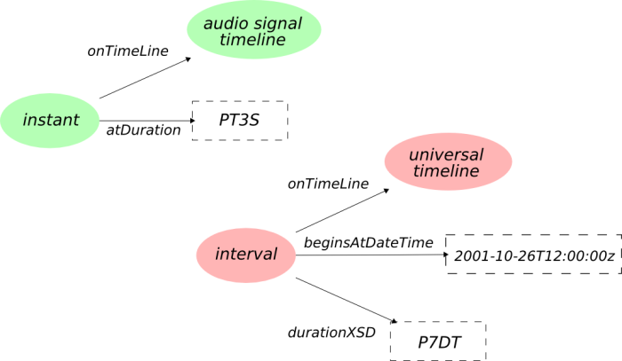

The Timeline Ontology
Copyright © 2007 the authors above.

This work is licensed under a Creative Commons Attribution License.
This copyright applies to the Timeline Ontology and accompanying documentation in RDF.
This ontology uses W3C's RDF technology, an open Web standard that can be freely used by anyone.
Table of Contents
- Introduction
- Namespaces
- The Timeline model
- Overview of Terms
- Ontology Terms
- Classes
- Properties
- References
Introduction
This document describes the Timeline ontology developed in the
Centre for Digital
Music in Queen Mary, University of
London. The first draft of the ontology was written in November, 2004.
Further details about the Timeline ontology, related ontologies, and the
technologies on which this ontology is founded, please see the
reference section.
This ontology is centered around the notion of timeline, seen here
as a way to identify a temporal backbone. A timeline may support a signal, a video, a score,
a work, etc. A particular instance of a timeline is the physical one, on which the 29th of October, 2007
is defined.
This ontology, used with the Event ontology, can be used to
annotate sections of a signal, a video, or any temporal object. For example, it can be used to express:
- This shot holds between this frame and that frame, in this video
- This performance happened at that particular date
- In this song, the first chorus is before the second verse
- A new structural segment starts at 2 minutes and 43 seconds, on this signal
- This signal is a sampled version of this one
- This part of the score corresponds to this section in an actual performance (in progress...)
Some tools to manipulate data from this ontology can be found in the
motools project
on Sourceforge.
This documentation page is a first draft. All feedback on either the ontology
or this page is welcomed! The best place to do so are the
Event ontology mailing list or the Music ontology
mailing list, for music-related use cases. Or feel free to email the authors mentioned aboved.
The design and layout of this ontology document is based on the Music Ontology and FOAF Vocabulary specification documents.
Namespaces
Several namespaces will be assumed to have been defined for the remainder
of this document. These are as follows :
The Timeline Model
This ontology defines the TimeLine concept, representing a coherent backbone for
addressing temporal information. Each temporal object (signal, video, performance, work, etc.) can
be associated to such a timeline. Then, a number of Interval and Instant can be defined on this timeline, using
the tl:onTimeLine property.
A timeline is associated to one or several coordinate systems, allowing to address a particular point on them.
Here, we use XML-Schema datatypes to define these systems. Therefore, an instant defined on a timeline may be linked
to a literal in the corresponding XSD datatype. Such restrictions are captured within the ontology, using
sub-properties (constrained to one particular datatype) of the tl:at property.
Two timelines may be linked together, using the TimeLineMap concept. For example, the UniformSamplingMap
concept subsumes TimeLineMap, and captures the fact that a digital timeline is a sampled version of an
analog timeline (and holds information about the sampling frequency). Another example is the ShiftMap, which captures a simple
translation between timelines.
An instant on a signal timeline (Smells like
teen spirit, as published on the Nevermind album), and an interval on the physical timeline can be depicted as follows:

The corresponding RDF/N3 code is the following:
@prefix event: <http://purl.org/NET/c4dm/event.owl#>.
@prefix tl: <http://purl.org/NET/c4dm/timeline.owl#>.
:instant
a tl:Instant;
tl:timeline <http://zitgist.com/music/signal/6da76448-982a-4a01-b65b-9a710301c9c9>
tl:at "PT3S"^^xsd:duration;
.
:interval
a tl:Interval;
tl:timeline tl:universaltimeline;
tl:start "2001-10-26T12:00:00Z"^^xsd:dateTime;
tl:duration "P7DT";
.
Overview of Terms
An alphabetical index of the ontology terms, divided into classes, properties and individuals. All the terms are hyperlinked to their detailed description for quick reference.
Ontology Terms
Classes
Class: timeline:AbstractInstant - stable -
AbstractInstant
- An instant defined on an abstract timeline
[back to top]
Class: timeline:AbstractInterval - stable -
AbstractInterval
- An interval defined on an abstract time-line.
[back to top]
Class: timeline:AbstractTimeLine - stable -
AbstractTimeLine
- Abstract time lines may be used as a backbone for Score, Works, ...
This allows for TimeLine maps to relate works to a given
performance (this part was played at this time).
[back to top]
Class: timeline:ContinuousTimeLine - stable -
ContinuousTimeLine
- A continuous timeline, like the universal one, or the one backing an analog signal
[back to top]
Class: timeline:DiscreteInstant - stable -
DiscreteInstant
- An instant defined on a discrete timeline
[back to top]
Class: timeline:DiscreteInterval - stable -
DiscreteInterval
- An interval defined on a discrete timeline, like the one backing a digital signal
[back to top]
Class: timeline:DiscreteTimeLine - stable -
DiscreteTimeLine
- A discrete time line (like the time line backing a digital signal
[back to top]
Class: timeline:Instant - stable -
Instant
- An instant (same as in OWL-Time)
[back to top]
Class: timeline:Interval - stable -
Interval
- An interval (same as in OWL-Time). Allen's relationships are defined in OWL-Time.
[back to top]
Class: timeline:OriginMap - stable -
OriginMap
- A timeline map linking a physical timeline to a relative one (originating at some point on the physical timeline)
[back to top]
Class: timeline:PhysicalTimeLine - stable -
PhysicalTimeLine
- A "physical" time-line (the universal time line (UTC)) is an instance of this class. Other time zones consists in instances of this class as well, with a "shifting" time line map relating them to the universal time line map.
[back to top]
Class: timeline:RelativeInstant - stable -
RelativeInstant
- An instant defined on a relative timeline
[back to top]
Class: timeline:RelativeInterval - stable -
RelativeInterval
- an interval defined on a relative timeline
[back to top]
Class: timeline:RelativeTimeLine - stable -
RelativeTimeLine
- Semi infinite time line...canonical coordinate system --> adressed through xsd:duration since the instant 0.
[back to top]
Class: timeline:ShiftMap - stable -
ShiftMap
- a map just shifting one timeline to another
[back to top]
Class: timeline:TimeLine - stable -
TimeLine
- Represents a linear and coherent piece of time -- can be either abstract (such as the one behind a score) or concrete (such as the universal time line).
Two timelines can be mapped using timeline maps.
[back to top]
Class: timeline:TimeLineMap - stable -
TimeLineMap
- Allows to map two time lines together
[back to top]
Class: timeline:UTInstant - stable -
UTInstant
- This concept expresses that an instant defined on the universal timeline must be associated to a dateTime value
[back to top]
Class: timeline:UTInterval - stable -
UTInterval
- an interval defined on the universal time line
[back to top]
Properties
Property: timeline:at - stable -
at - refers to a point or an interval on the time line, through an explicit datatype
Property: timeline:atDate - stable -
atDate - A subproperty of :at, allowing to address a date (beginning of it for an instant, all of it for an interval)
Property: timeline:atDateTime - stable -
atDateTime - This property links an instant defined on the universal time line to an XSD date/time value
Property: timeline:atDuration - stable -
atDuration - A property enabling to adress a time point P through the duration of the interval [0,P] on a continuous timeline
Property: timeline:atInt - stable -
atInt - A subproperty of :at, having as a specific range xsd:int
Property: timeline:atReal - stable -
atReal - subproperty of :at, having xsd:float as a range
Property: timeline:atYear - stable -
atYear - A subproperty of :at, allowing to address a year (beginning of it for an instant, all of it for an interval)
Property: timeline:atYearMonth - stable -
atYearMonth - A subproperty of :at, allowing to address a year/month (beginning of it for an instant, all of it for an interval)
Property: timeline:beginsAtDateTime - stable -
beginsAtDateTime - A subproperty of :beginsAt, allowing to address the beginning of an interval as a date/time
Property: timeline:beginsAtDuration - stable -
beginsAtDuration - A property enabling to adress a start time point P of an interval [P,E] through the duration of the interval [0,P] on a continuous timeline
Property: timeline:beginsAtInt - stable -
beginsAtInt - A subproperty of :beginsAt, having xsd:int as a range
Property: timeline:delay - stable -
delay - associate a shift map to a particular delay
Property: timeline:domainTimeLine - stable -
domainTimeLine - associates a timeline map to its domain timeline
Property: timeline:duration - stable -
duration - the duration of a time interval
Property: timeline:durationInt - stable -
durationInt - A subproperty of :duration, having xsd:int as a range
Property: timeline:durationXSD - stable -
durationXSD - A subproperty of :duration, having xsd:duration as a range
Property: timeline:end - stable -
end - refers to the end of a time interval, through an explicit datatype. time:hasEnd can be used as well, if you want to associate the end of the interval to an explicit time point resource
Property: timeline:endsAtDateTime - stable -
endsAtDateTime - A subproperty of :endsAt, allowing to address the end of an interval as a date/time
Property: timeline:endsAtDuration - stable -
endsAtDuration - A property enabling to adress an end time point P of an interval [S,P] through the duration of the interval [0,P] on a continuous timeline
Property: timeline:endsAtInt - stable -
endsAtInt - A subproperty of :endsAt, having xsd:int as a range
Property: timeline:hopSize - stable -
hopSize - hop size, associated to a uniform windowing map
Property: timeline:origin - stable -
origin - associate an origin map to its origin on the domain physical timeline
Property: timeline:rangeTimeLine - stable -
rangeTimeLine - associates a timeline map to its range timeline
Property: timeline:sampleRate - stable -
sampleRate - associates a sample rate value to a uniform sampling map
Property: timeline:start - stable -
start - refers to the beginning of a time interval, through an explicit datatype. time:hasBeginning can be used as well, if you want to associate the beginning of the interval to an explicit time point resource
Property: timeline:timeline - stable -
timeline - Relates an interval or an instant to the timeline on which it is defined.
The 29th of August, 2007 would be linked through this property to the universal timeline, whereas
"from 2s to 5s on this particular signal" would be defined on the signal' timeline.
Property: timeline:windowLength - stable -
windowLength - window length, associated to a uniform windowing map
References
- Semantic Web Information
- W3C Semantic Web Activity
- Primer: Getting into RDF & Semantic Web using N3
- Related projects
- Music Ontology
- Chord Ontology
- Event Ontology
- Friend of a Friend
- (Somehow) related publications
- The Music Ontology, ISMIR2007
- An ontology-based approach to information management for music analysis systems